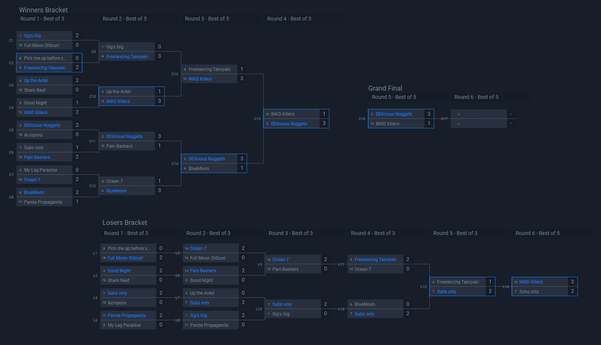

Welcome to Low Ink!
Before you get started, it’s important to understand that Low Ink is a 2 day tournament for newer and lower level competitive splatoon teams. Before you register, you need to form your own team, or join an existing one. Each team in Low Ink can hold 8 members, and you may swap between players as needed throughout the tourney. Ensure you have at least 4 players available to play for both days of Low Ink!
If you’re new to the competitive Splatoon community, it can be pretty daunting to find a team at first! Typically most people find success on community Discord servers. Some have channels dedicated to letting “Free agents”, or players looking to join a team, advertise themselves. The Discord server Low Ink is managed in, called Inkling Performance Labs, has free agent and team post channels, so whether you’re making a team or planning to join an existing one, you can start your search here! Join the Inkling Performance Labs Discord.
Low Ink is a long-running Splatoon 2 & Splatoon 3 tournament with a goal of introducing competitive Splatoon to newer and lower level teams. The tournament’s format was carefully created to give all teams plenty of games with a variety of teams, so you can make connections with teams around your skill level and find quality practices both in and out of the event.
Low Ink famously has a skill cap that bans players who are beyond the “low level” part of the community. This is achieved via a dedicated staff team that checks over all players that register for Low Ink. Tournament results are looked into and if a player is too good for Low Ink, they’ll be kicked out. The vast players who are new to the community are allowed. Keep in mind that solo rank isn’t considered for this skill cap.
As previously mentioned, Low Ink has a carefully created format that allows teams to get as many games as possible.
For Day 1:
Day 1 features what is called a “swiss format”. There will be 6 rounds (or less depending on number of teams) total throughout the day. All teams will play all rounds regardless of how many wins or losses they have. Each round has 3 games, and you play all 3 games per round. As the event progresses, the format will start to pair teams with similar win/loss ratios. So you should start finding teams very close to your skill level by the end of day 1!
For Day 2:
Day 2 features multiple brackets. Typically there are 3 brackets, called Alpha, Beta, and Gamma. There may be more or less depending on the number of teams. Each bracket is sorted by day 1 results. The top 16 best day 1 teams will move on to Alpha bracket, then the next 16 move to Beta, and the next 16 move to Gamma. Not all teams will make it to day 2.
All brackets have identical rules, and feature what's called a “double elimination” format. This means you’ll go through a traditional tournament bracket, but if you lose a round, you move down to the “losers bracket”. Once you’re down there, you’ll be out once you lose a round again. Grand finals consist of the winner of the winners bracket and the losers bracket. The winner of the Alpha bracket is considered the winner of the entire event, while the other brackets are there to help build results and get more practice for teams.
Here’s an example of what a bracket looks like. Taken from Low Ink May 2022 Alpha Bracket:
Low Ink registration typically opens at the start of each month. You can check if it’s open by visiting the Play Low Ink page of this website.
Low Ink is hosted using Discord and a site called Battlefy. Most communication and announcements are made on the Inkling Performance Labs Discord, while all the brackets and matches are handled on Battlefy. Team captains are required to be in both the discord and registered for the event.
To register for Low Ink, you need to visit the Low Ink Battlefy. You can find the Low Ink battlefy at the Play Low Ink page. Once there, click the red registration button on the right, it might be on the bottom if you’re on mobile. Only one person from a team needs to register!

Once there, you’ll be prompted with the rules. Please read through them!
Past that page, you’ll be promoted to select which team you’d like to register with; or you have the option to make a new team!

Once that’s been handled, you’ll need to give us some info. All you need to do is enter your team captain’s discord tag, switch friend code, and let staff know you’ve agreed to the rules! The discord tag is used by our discord bot to assign important roles, so make sure it matches exactly!

If needed, you may invite your teammates to your Battlefy team via the link the site provides you.

To ensure everyone is in the right place, your team and registration status will now be visible on the main Low Ink battlefy page. Remember that all players you want playing must be on the roster, if they’re under “inactive team members”, they cannot play! You may not add players to your team’s roster after registration closes.

After registering, the team’s captain must join the Inkling Performance Labs Discord to gain access to important announcements from staff! Remember to get the Low Ink role from the rules and roles channel to see the Low Ink channels.
When the day of the event arrives, it's important to follow instructions from the Discord’s announcements channel. They’ll remind you of important deadlines and info on the tournament’s progression. Keep an eye out for them!
Before the event starts, all teams that are able to play must check into the tournament. Once you know enough of your team members are available to play, then you need to hit the check in button on the main Low Ink Battlefy page. It should be in the same spot where you handled registration. Anyone on your team can check in.

Once the tournament begins, you may find your match in Battlefy. There will be a button that says “go to match” on the main Low Ink Battlefy page. Once there, you have access to the match page. Here, you can chat with your opponents, access their friend code, and report scores. Go ahead and choose who hosts the private battle room, and start your round here!
To know what map and mode you’re playing on, there is a maps channel in the Discord. Find which round you’re playing, and there'll be a map list for it!

If you have any issues come up during your match, please click the report match issue button and a staff member will visit to help resolve your issue! You may also ask for help in our discord in the #li-helpdesk channel.